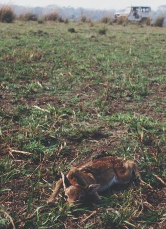
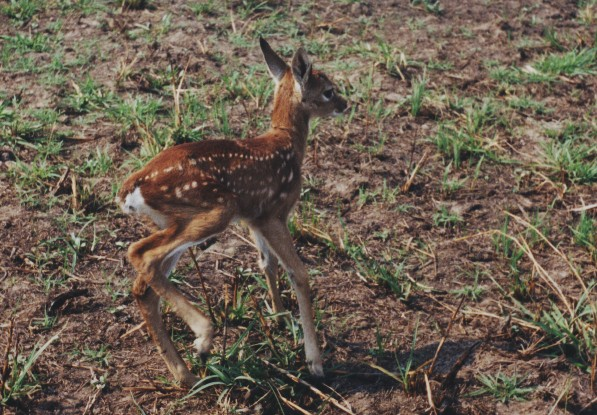

Há uma diminuição da
umidade relativa do ar, e um aumento da evaporação das águas.
A dinâmica atmosférica é
afetada, influindo nos seus fenômenos.
É de se esperar que haja uma intensificação
dos fenômenos meteorológicos,
com mais chuvas, mais secas, mais ventos,
mais raios, mais calor, mais frio, etc.
Outros fatores envolvidos
Obstáculo aéreo
A chamada névoa seca, que tanto prejudicam
a aeronáutica, não tem nada de natural,
é a fumaça das queimadas que
os agropecuaristas produzem em certas épocas do ano
em que o capim e a mata estão mais
secos.
Parte das queimadas são resultado
de fogo ateado propositadamente
à parques nacionais e outras reservas
naturais,
como sinal de protesto ou por interesse político
pelas áreas.
Algumas queimadas podem ser produzidas
por raios,
mas sua freqüência é baixíssima,
até porque estão associados à chuva.
Mais comum é que à eles sejam
atribuídas culpas pelo descuido com pontas de cigarro
e eventualmente, até fogueiras de
acampamentos de pescadores.
Poluição, (saúde,
cheiro)
O aumento da poluição nas épocas
de queimadas é mais uma fonte de prejuízo,
desta vez diretamente relacionado à
saúde.
São afetadas principalmente as crianças,
que já vem sofrendo pela baixa umidade
do ar nestas épocas do ano.
Há ainda o desagradável cheiro
que prejudica à todos.
Economia (agropecuária,
turismo, saúde)
Diante deste quadro de prejuízos,
não é difícil imaginar o custo que se tem
com suplemento de fertilizantes na agricultura,
com a falta de umidade, ou excesso de chuvas,
com o sistema de saúde, etc.,
e até com o turismo, que carece de
ambiente belo e sadio.
Não bastasse isto tudo,
há o prejuízo direto à
natureza. É algo difícil de se quantificar os trilhões
de animais
(aves, mamíferos, répteis,
insetos, etc. e até peixes intoxicados pelas cinzas carreadas pelo
vento e pela chuva) que morrem anualmente pela prática da queimada,
direta ou indiretamente.
Veja na foto abaixo,
um filhote de veado-campeiro, Ozotocerus
bezoarticus
abrigando-se no nada, sob suas próprias
patas dianteiras, num campo queimado,
onde deveria existir um capim de até
2 metros de altura.

Local: Pantanal da Nhecolândia
- MS - Brasil
Foto: arquivo CEPEN / 380p
/ M. D. N. Xavier
Veja seqüência abaixo.

Local: Pantanal da Nhecolândia
- MS - Brasil
Foto: arquivo CEPEN / 381p
/ M. D. N. Xavier
"Quando eu estava à menos de dois
metros, com a câmera, é que este filhote resolveu levantar-se
e correr.
Qualquer predador poderia tê-lo abatido,
já que o capim que lhe deveria proteger,
fora queimado.
Sua programação instintiva
manda que fique deitado quieto em meio ao capim,
para proteger-se dos predadores.
Sem capim, sua defesa (de imóvel camuflagem)
fica grandemente prejudicada".
A queimada de campo
Os meses de seca no Centro-oeste e a geada
no sul do Brasil,
ressecam a pastagem e são um convite
à ação do tradicional pecuarista incendiário.
O fogo estimula e antecipa a brotação
da pastagem,
mas tem um custo terrível para a própria
pastagem.
Ocorre que o fogo não age homogeneamente
sobre o campo.
A pastagem natural é um composto variado
de espécies,
e a ação do fogo ano após
ano, elimina as mais tenras e nutritivas,
restando um predomínio das mais grosseiras
e entouceiradas.
Há ainda as perdas de fertilidade
do solo, por empobrecer a matéria orgânica presente,
e conseqüentemente, a vida microbiana
do solo.
Justamente a responsável pela reciclagem
e disposição de nutrientes para as plantas.
A vida micro e macrobiana do solo é
grandemente responsável pela sua textura e estrutura,
fatores fundamentais para a manutenção
da umidade do solo,
sua permeabilidade aos nutrientes, à
água, ao ar e as raízes,
e como resultado final,
a sua produtividade primária.
Duração desta
campanha
Lançada no Espaço Cultural
CEPEN, em 29 de julho de 2000,
esta campanha se estenderá por prazo
indeterminado,
até que modernas técnicas de
manejo ambiental urbano e rural,
estejam disseminadas e francamente utilizadas
pela população ativa,
e postas de lado técnicas arcaicas
de caráter incendiário,
tão danosas ao ambiente e a qualidade
de vida de todos.